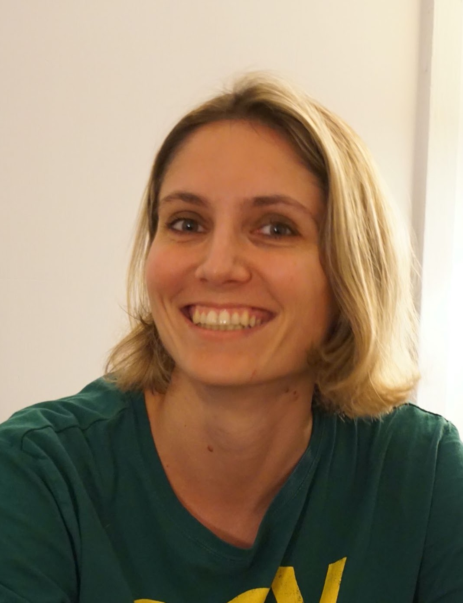

Jeanne Boursier

Email: jb4893@columbia.edu
I am a Ritt Assistant Professor (postdoc) in the Mathematics Department at Columbia University.
Before that, I spent a year at ENS Lyon working with
Alice Guionnet.
I received my PhD in November 2022 from Université Paris-Dauphine, under the joint supervision of
Djalil Chafaï (Université Paris-Dauphine) and
Sylvia Serfaty (New York University).
My research is in probability theory, with a focus on statistical physics.
I am currently interested in the Berezinskii–Kosterlitz–Thouless phase transition and in spin glasses.
Here is a brief CV.
Publications and preprints
-
Universal cutoff for the Dyson Ornstein–Uhlenbeck process,
with Djalil Chafaï and Cyril Labbé.
Probability Theory and Related Fields (2023)
-
Optimal local laws and CLT for the 1D long-range Riesz gas.
In revision at Annals of Probability
-
Thermodynamic limit and decay of correlations for the circular long-range Riesz gas.
In revision at Probability and Mathematical Physics
-
Large deviations for the smallest eigenvalue of a deformed GOE with an outlier,
with Alice Guionnet.
In revision at Annales de l'Institut Henri Poincaré
-
Dipole formation in the two-component plasma,
with Sylvia Serfaty.
In revision at Communications on Pure and Applied Mathematics
-
Multipole and Berezinskii–Kosterlitz–Thouless transitions in the two-component plasma,
with Sylvia Serfaty.
arXiv preprint (2025)
-
The Legendre structure of the TAP complexity for the Ising spin glass.
arXiv preprint (2026)
-
Choosing is losing and the glass problem.
In preparation
Talks
- April 2026Duke Probability seminar
- April 2026Probability seminar, University of Chicago
- February 2026Cornell Probability seminar
- December 2025Applied Mathematics colloquium, Brown University
- December 2025Mathematics colloquium, Indiana University Bloomington
- December 2025Mini-course, conference “Topological phase transition and localization of random fields,” University of Chile
- April 2025NYU Courant Probability seminar
- November 2024Princeton Probability seminar
- October 2024Temple–UPenn Probability seminar
- October 2024CRM–ISM Probability seminar, Montreal
- September 2024Columbia Probability seminar
- August 2024Bernoulli–IMS Congress in Probability and Statistics, session on random matrices and applications
- March 2023Probability seminar, Université Aix-Marseille
- February 2023Conference “Hyperuniform structures, rigid point processes and related topics,” Université de Lille
- January 2023Probability seminar, Université Grenoble Alpes
- January 2023Working group in stochastic modeling, LPSM, Sorbonne Université
- December 2022Conference on Coulomb gases and universality, Institut Henri Poincaré
- November 2022Workshop Journées EFI, Université Lyon 1
- September 2022Working group LDRAM, ENS Lyon
- May 2022Probability seminar, Université Rennes 1
- April 2022Probability seminar, Université Paris-Saclay
- April 2022Séminaire MEGA, Institut Henri Poincaré
- March 2022Probability seminar “Les probas du vendredi,” LPSM, Sorbonne Université
- January 2022Working group in probability, Université de Lille
- May 2021SMAI young researchers project (BOUM, point processes), Université de Paris
Teaching
- Spring 2026Ordinary Differential Equations, Columbia University
- Fall 2025Introduction to Modern Analysis II, Columbia University
- Spring 2025Honors Math B, Columbia University
- Fall 2024Ordinary Differential Equations, Columbia University
- Spring 2024Calculus 3, Columbia University
- Fall 2023Ordinary Differential Equations, Columbia University
- 2021–2022Teaching assistant in Analysis, Université Paris-Dauphine
- 2020–2021Teaching assistant in Optimization, Université Paris-Dauphine
- 2019–2021Teaching assistant in Probability, Université Paris-Dauphine